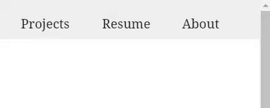
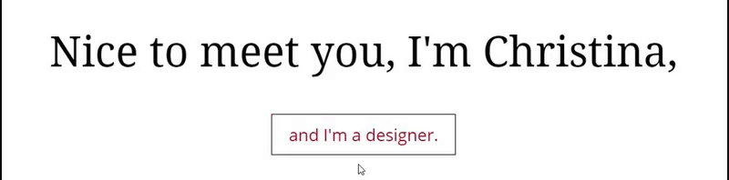
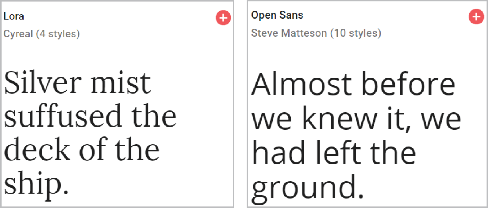

Out of all the project I’ve done, this one is the hardest. Not only did I have to create a personal brand, but I also had to think of a smart way of presenting my work. On top of all that, I also wanted to develop it myself.
I began the project by looking at other online portfolios and taking note of trends. I saw that some people had a landing page with a short blurb introducing themselves followed by a grid of their work underneath. I thought that this style of homepage was straightforward, easy to navigate, and simple enough that I could make myself, so I developed my portfolio that way.

My first attempts at creating a brand were unsuccessful. During this phase of my life, I did not have a good understanding of color theory or font pairings. I chose what I thought looked good at the time. It was difficult for me to pinpoint what exactly I wanted to say about myself through my design decisions.

I was discouraged after my first attempt, so I bought a web template and decided that I would be done with it. However, doing so didn’t sit right with me. I knew I had to go back and try again.

I still felt like something was lacking. I reasoned that I needed a more cohesive design language and went back to work.

I also included subtle page animations for a smooth UX.
 While I did like the previous version, I felt that it needed some more refining. I decided to take out all the bells and whistles and just focus on the projects on the landing page while keeping some remnants of the older versions.

I recognized that what I currently had was a little stiff and uninviting, so I sat down and created a style guide and some design criteria to guide my work. The goal was to build on what I had done before and to elevate it.

For the color palette, I wanted to keep things professional, but playful.

I kept the same idea in mind when selecting the typography. I did this by combining a traditional serif typeface and a softer sans-serif typeface.
Finally, I adjusted margins, font sizes, and line spacing for a more “open” feel.
I will undoubtedly look upon my portfolio sometime in the future and hate it. So further refinement and project updates are inevitable.